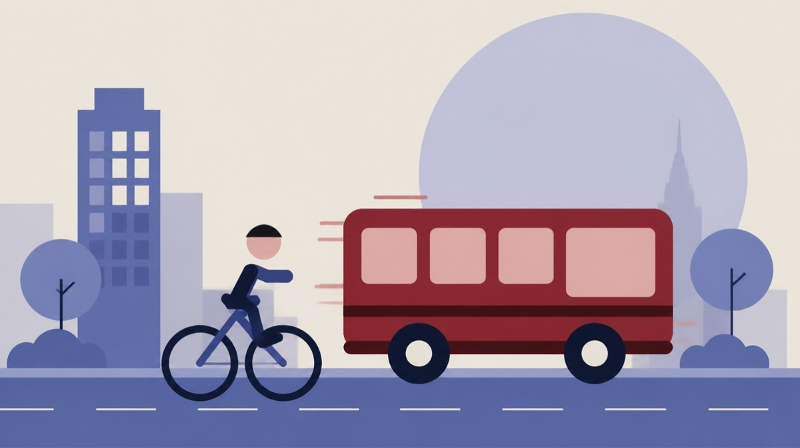

Besluttet 17. november, Plan- og Trafikudvalget, Ringkøbing-Skjern
Budgetopfølgning pr. 31. oktober 2026, Plan- og Trafikudvalet
Trafik og cyklerBudget og økonomi

Kort fortalt
- Hvem
- Plan- og Trafikudvalget, Ringkøbing-Skjern Kommune
- Hvornår
- Tirsdag 17. november 2026
- Status
- Besluttet. Plan- og Trafikudvalget tog budgetopfølgningen til efterretning. Udvalget er indstillet på, at der afholdes et ekstraordinær udvalgsmøde om udbud vedrørende kollektiv trafik.
Er noget forkert her? Skriv til os
Læs hele sagen Kommunens egen tekst
Sagsfremstilling
Administrationen fremsender budgetopfølgningen pr. 31. oktober 2026 for Plan- og Trafikudvalgets driftsområde til orientering. Budgetopfølgningen er udarbejdet med udgangspunkt i de korrigerede budgetter for 2026 eksklusiv overførsler fra tidligere år. Et mer- eller mindre forbrug er således udtryk for, om der bruges mere eller mindre af indeværende års budget.
Budgetopfølgningen viser et samlet mindre forbrug på 1,862 mio. og den månedsvise udvikling fremgår af nedenstående oversigt:
Budgetopfølgningen fordeler sig således:
Det forventede resultat er samlet set uændret i forhold til sidste budgetopfølgning. Der er dog følgende ændringer i forhold til sidste budgetopfølgning:
Havne: Der har tidligere været en forventning om et lille mindre forbrug på 0,1 mio. kr., men på grund af renovering af havnebåd forventes regnskabet nu at gå i 0.
Vejdrift: Her er det forventede resultat forbedret med 1 mio. kr. og skyldes særligt på brolægningsområdet, hvor budgettet nu ikke forventes anvendt fuldt ud.
Kollektiv Trafik: Området forventes nu at balancere. Der har tidligere været en forventning om et samlet mindre forbrug på 1 mio. kr. Dette skyldes en forventet nedgang i flextrafikken på 1,5 mio. kr., der opvejer de forventede merudgifter til kørsel grundet de stigende dieselpriser på godt 0,5 mio. kr. I forbindelse med konkursen af Herning Turist er de økonomiske konsekvenser for kommunen i 2026 foreløbig vurderet til at blive 0,875 mio. kr. jf. udmelding fra MidtTrafik.
MidtTrafik har oplyst, at de forventede økonomiske konsekvenser i 2027 som følge af konkursen kan løbe op i 2,2 mio. kr. indtil 31.7.2027, hvor et nyt udbud er på plads. Det bemærkes at et nyt udbud kan betyde højere priser.
Herudover har MidtTrafik oplyst, at en større indeksstigning for november måned 2026 vil betyde yderligere en forventet merudgift i 2027 på 1,3 mio. kr. Det beror dog på en vis usikkerhed, idet der ikke er en afklaring på om staten kompenserer for de højere udgifter i 2027.
Men det betyder, at der i 2027 kan forventes en samlet merudgift på op til 3,5 mio. kr. Måske højere afhængig af det kommende udbud. Der er på området opsparet knap 6,4 mio. kr., der kan finansiere en eventuel merudgift i 2027.
Lovgrundlag og juridisk vurdering
Ingen bemærkninger.
Økonomi
Viden- og Strategi, Økonomi har ingen bemærkninger.
Effektvurdering
Det bemærkes, at det forventede samlede mindre forbrug har en positiv effekt på kommunens serviceramme for 2026.
Indstilling
Administrationen indstiller, at budgetopfølgningen pr. 31. oktober 2026 tages til efterretning.
Beslutning
Plan- og Trafikudvalget tog budgetopfølgningen til efterretning.
Udvalget er indstillet på, at der afholdes et ekstraordinær udvalgsmøde om udbud vedrørende kollektiv trafik.
Fraværende: Niels Rasmussen
Kilde: Ringkøbing-Skjern Kommune, Plan- og Trafikudvalget, referat fra mødet tirsdag 17. november 2026, punkt 6. Læs den originale sag hos kommunen.